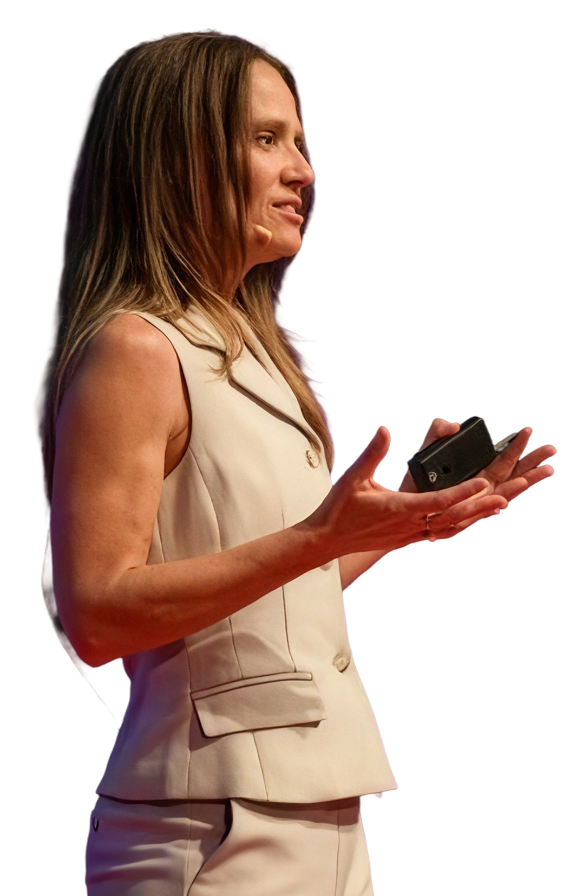

Think Like a Scientist

Hands-on science outreach for elementary and middle-school kids, alongside volunteer scientists at CU Anschutz.
View work
Hands-on science outreach for elementary and middle-school kids, alongside volunteer scientists at CU Anschutz.
View work
Uses her expertise as an immunologist to break down the science of the immune system for anyone who comes across her page.
View work
Mentors PhD students and postdocs on curriculum design, teaching practice, and assessment.
View workUnbiased Science Podcast · April 2025. A recent conversation on autoimmune disease, unpacked for a general audience.
View workSwipe fast to clear the germs · spare your own cells · 0 cleared